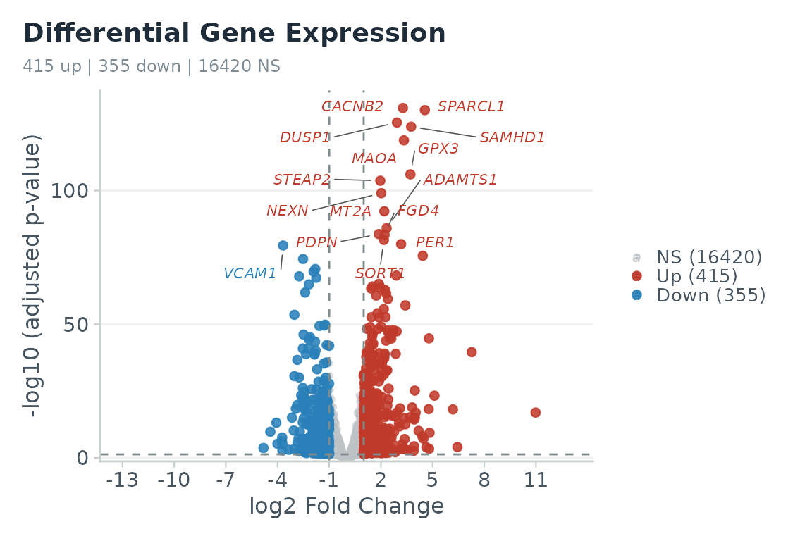

RNAmel is a downstream bulk RNA-seq analysis platform, usable either
as an interactive Shiny app (run_app()) or as a set of
pure, scriptable functions. This vignette is a reproducible
reference analysis: the core steps below run on a bundled,
published dataset so you can reproduce a real result end to end.
The data
The package bundles two real, published human datasets. Here we use airway (Himes et al. 2014): airway smooth-muscle cells treated with dexamethasone vs. control across four cell lines.
counts <- read_counts(system.file("extdata", "demo_airway_counts.csv",
package = "RNAmel"))
meta <- read_metadata(system.file("extdata", "demo_airway_metadata.csv",
package = "RNAmel"),
counts_samples = colnames(counts))
dim(counts)
#> [1] 17190 8
head(meta)
#> sample condition cell
#> 1 SRR1039508 Control N61311
#> 2 SRR1039509 Dex N61311
#> 3 SRR1039512 Control N052611
#> 4 SRR1039513 Dex N052611
#> 5 SRR1039516 Control N080611
#> 6 SRR1039517 Dex N080611read_counts() and read_metadata() run
strict validation and fail fast with an explicit message on malformed
input (negative values, duplicate gene IDs, missing rownames, sample
mismatch, …).
Differential expression
We model expression as a function of condition,
adjusting for the paired cell line, and contrast
dexamethasone (Dex) against Control.
res <- run_deseq2(
counts, meta,
design = ~ cell + condition,
contrast = c("condition", "Dex", "Control"),
shrink = TRUE # apeglm LFC shrinkage, Wald stat preserved
)
#> converting counts to integer mode
head(res[order(res$padj), ])
#> gene baseMean log2FoldChange lfcSE stat pvalue
#> 6538 CACNB2 495.3581 3.275664 0.1326449 24.80377 8.163663e-136
#> 3979 SPARCL1 997.6038 4.550562 0.1865863 24.70052 1.055901e-134
#> 1056 DUSP1 3410.8040 2.933081 0.1219507 24.24829 6.893203e-130
#> 234 SAMHD1 12705.8482 3.753364 0.1576715 24.08727 3.398689e-128
#> 1618 MAOA 2343.3913 3.336101 0.1430166 23.58574 5.398708e-123
#> 253 GPX3 12292.3589 3.711423 0.1692351 22.30297 3.457747e-110
#> padj
#> 6538 1.240060e-131
#> 3979 8.019566e-131
#> 1056 3.490258e-126
#> 234 1.290652e-124
#> 1618 1.640128e-119
#> 253 8.753862e-107
sum(res$padj < 0.05 & abs(res$log2FoldChange) > 1, na.rm = TRUE) # sig genes
#> [1] 770Visualize
fig_volcano(res, lfc_thr = 1, padj_thr = 0.05, n_label = 15,
mode = "exploration")
#> Warning: Removed 2000 rows containing missing values or values outside the scale range
#> (`geom_point()`).
Every figure function takes a
mode = c("exploration", "publication") argument;
publication mode uses 8-pt Helvetica, strict axes, and no grid, ready
for a figure panel. Interactive versions
(fig_volcano_interactive(), fig_pca(),
fig_umap(), …) return plotly widgets for exploration.
For a heatmap and a PCA / UMAP sample overview you also need a normalized matrix:
vst <- normalize_counts(counts, meta, method = "vst")
fig_heatmap(vst, res = res, metadata = meta, n_genes = 40)
fig_pca(vst, meta, n_top = 500, color_by = "condition")
fig_umap(vst, meta, color_by = "condition") # non-linear embeddingDownstream analyses
The heavier steps depend on optional (Bioconductor) packages and
network resources, so they are shown here rather than executed. All work
from the same res / vst objects and take an
organism of "human", "mouse", or
"rat".
# Functional enrichment: GSEA (whole ranked list) and ORA (significant genes)
gene_sets <- get_gene_sets("human", collection = "H") # MSigDB Hallmark
gsea <- run_gsea(res, gene_sets, rank_by = "stat")
fig_enrich_dot(gsea)
sig <- contrast_sig_genes(res, padj_thr = 0.05, lfc_thr = 1)
ora <- run_ora(sig, "human", db = "GO", ont = "BP", universe = res$gene)
fig_enrich_bar(ora)
# Co-expression network (WGCNA)
datExpr <- wgcna_datexpr(vst, n_genes = 3000)
wg <- run_wgcna(datExpr, power = wgcna_pick_power(datExpr)$suggested)
fig_module_trait(module_trait_cor(wg$MEs, build_traits(meta, rownames(datExpr))))
# Regulator / pathway activity (decoupleR) and per-sample signatures (GSVA)
fig_activity_bar(run_activity(res, "human", what = "pathway"))
fig_gsva_heatmap(run_gsva(vst, gene_sets), meta)Sessions and reports
Bundle the whole analysis state into a single
.rnaflow.rds file, and export a reproducible R script and a
self-contained HTML report (no pandoc/Quarto required):
p <- assemble_project(
"airway_study", organism = "human",
counts = counts, metadata = meta,
contrasts = contrast_store_upsert(list(), "Dex vs Control", res))
save_project(p, "airway_study.rnaflow.rds")
cat(generate_r_script(p), file = "analysis.R") # runnable Methods script
build_report_html(p, "report.html") # one-file HTML reportLearn more
Everything above is also available point-and-click in the app:
run_app()See the package website for the full function reference and the README for the feature overview.